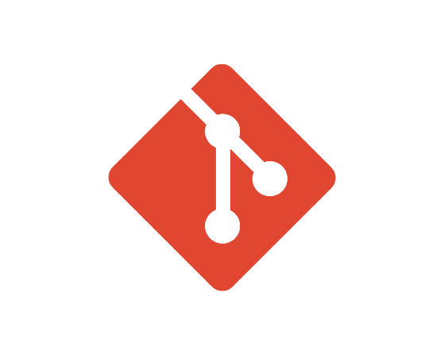

Stage 2020 - 2021 :
Web scraping en Python - Kevin Hutin Développeur Indépendant
Introduction :
Le Web Scraping, également appelé extraction de données web, est une technique d'automatisation informatique qui permet d'extraire des données et des informations à partir de sites web en les parcourant de manière systématique et automatisée.
Stage 2021 - 2022 :
Réalisation d'un site vitrine pour un commerce de bière belge - Pat d'Anvers patdanvers.fr
Introduction :
Pat d'Anvers est un commerce de bière belge proposant une large gamme de bières artisanales et de qualité. Pour renforcer sa présence en ligne et promouvoir ses produits, le commerçant a décidé de demander la création d'un site vitrine. Ce site permettra aux visiteurs de découvrir les différentes bières proposées, les prix et les promotions en cours. De plus, il offrira une expérience utilisateur agréable et intuitive, avec une navigation facile et une présentation attrayante des produits.
Stage 2022 - 2023 :
Projet de standardisation et d'insdustrialisation de modèle Wordpress - Conseil Départemental
Introduction :
Durant une période de 5 semaines, le stagiaire sera amené à découvrir le CMS WordPress, à le manipuler, et à créer au final un site fonctionnel, tout cela dans une optique d’automatisation et d’industrialisation de nos sites WordPress.
En effet, au conseil, la plupart de nos sites sont développés avec le CMS WordPress : c’est un système de gestion de contenu permettant de créer et de gérer différents types de sites web.
Dans notre pôle, nous gérons des sites d’actualités, des sites vitrine, des sites de vente en ligne, des sites d’inscriptions … le tout développé avec WordPress.